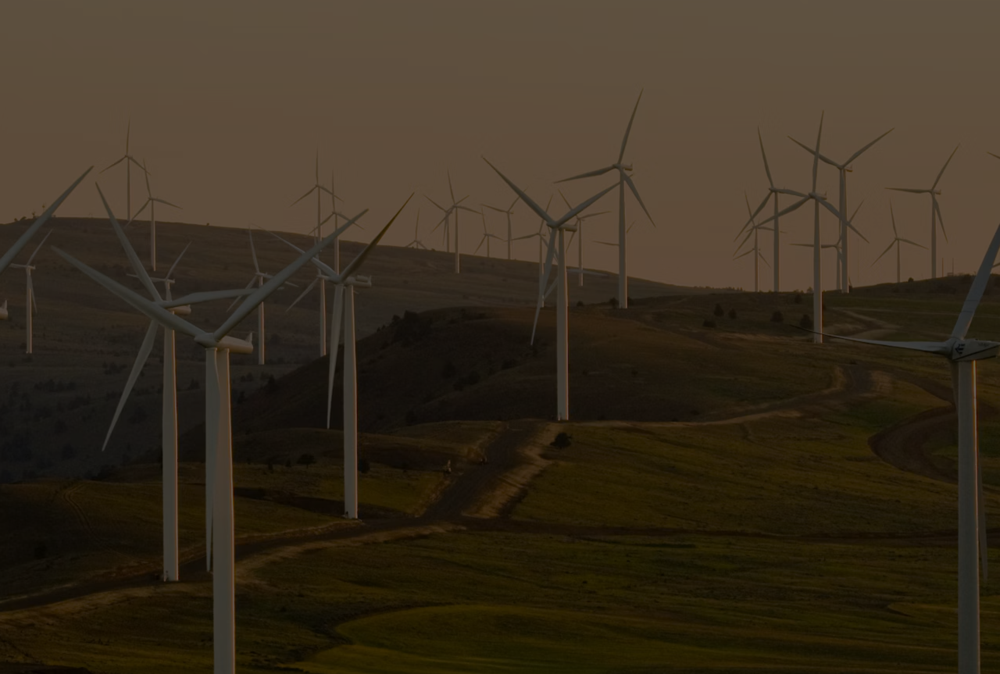
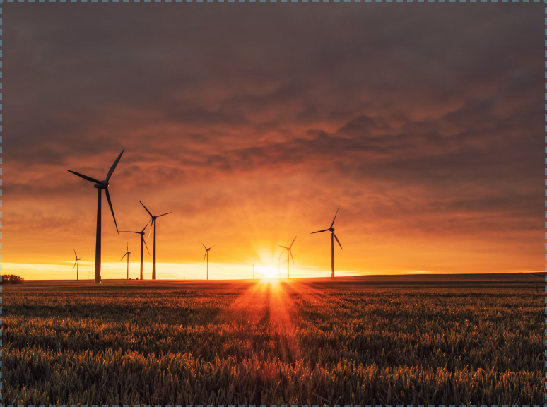
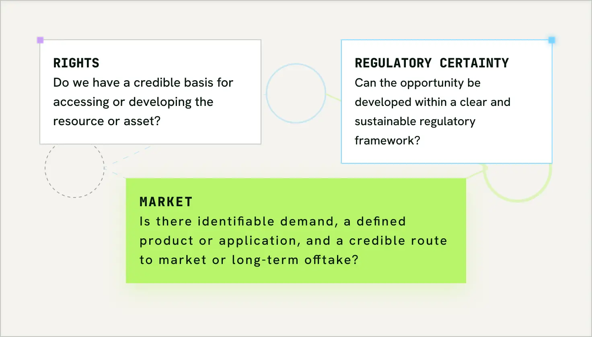
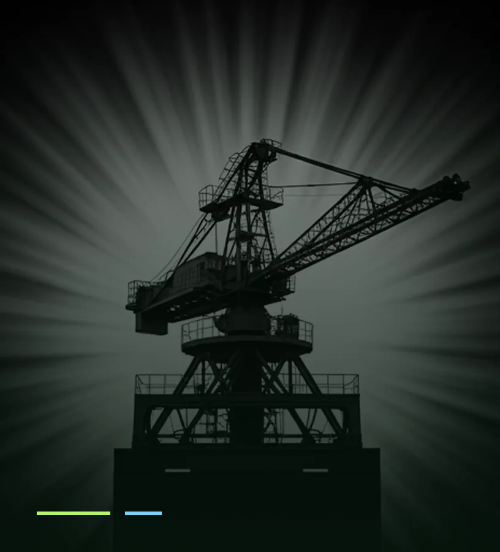
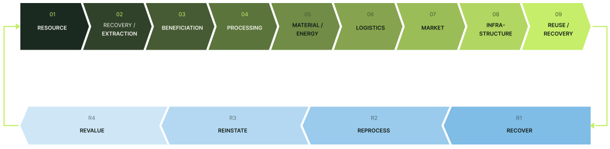

Since 2004, Osho Ventures has developed and pursued opportunities across resources, materials, logistics, infrastructure, energy, agriculture and real assets. We identify overlooked value, evaluate the technical and commercial pathways required to unlock it, and connect resources with processing, infrastructure, logistics and markets to develop scalable industrial platforms.

Exploration, mining, mineral resources and resource-based industrial opportunities.
Recovery, beneficiation and reprocessing of industrial residues and underutilised resources.
Mineral inputs, processing, beneficiation and material systems supporting cement and infrastructure.
Energy systems, alternative fuels, resource optimisation and industrial efficiency.
Real estate and physical assets developed with long-term resource and environmental considerations.

Agricultural assets, biological resources and plant-derived opportunities.
Industrial platforms, processing facilities, infrastructure and project development.
Rail, ports, bulk logistics, shipping and integrated movement of industrial materials.
From opportunity to industrial platform.
Identify resources, inefficiencies, infrastructure gaps and overlooked opportunities.
Determine the technical, economic and environmental pathway to value creation.
Connect resources, processing, logistics, infrastructure, markets and strategic partners.
Develop viable opportunities into durable industrial platforms.
Understanding the resource, its characteristics, its location, its constraints and its potential applications.
Selecting or developing appropriate recovery, beneficiation, processing and transformation pathways.
Connecting resources, processing infrastructure, transport corridors and markets.
Bringing the technical, commercial, financial and strategic components together to create scalable platforms.
Circularity is most powerful when it works economically as well as environmentally. Osho Ventures explores systems in which materials that would otherwise require disposal, storage or further extraction can become useful industrial inputs


Recovering value from resources that might otherwise remain underutilised.
Reducing dependence on virgin resources and improving the utilisation of existing material streams where technically and economically viable.
Creating new applications, markets and industrial pathways around previously underutilised resources.
Resource development · industrial materials · logistics · infrastructure · energy · agriculture
Industrial residues · circular materials · processing · cement markets · logistics
Industrial materials · infrastructure · resource efficiency · strategic supply corridors
Each stage adds value. What comes out at the end feeds back in at the start.

We look beyond conventional resource classifications to understand where value may remain unrealised.
We consider the resource, processing, logistics, infrastructure and market together.
We are prepared to develop opportunities rather than simply advise on them.
We connect capabilities that are often treated as separate businesses, bringing resources, processing, infrastructure, logistics and markets into a coherent development model.
We seek durable industrial platforms built around sustainable demand, commercial viability and long-term value rather than isolated transactions.
We work to align governments, industrial groups, technology providers, investors and strategic counterparties around complementary capabilities and shared development objectives.